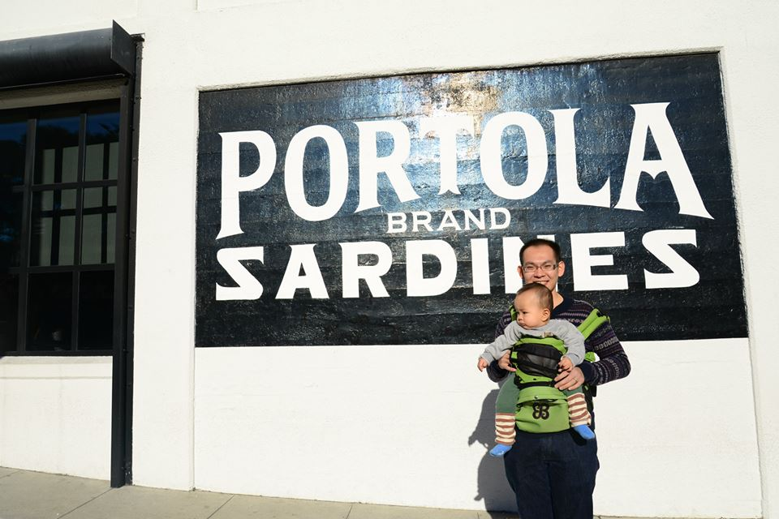

A Non-Traditional MBA's Mid-point Look-back
2015-09-24
A little over a year ago, my wife Sarah, our little friend Antoni and I made a series of trips from Singapore – where Sarah'd lived for 10 years and I'd 6, and where Antoni was born in February 2014 – to our homes in Viet Nam, and ultimately to Chicago via a 27-hour set of flights on which 6-month-old Antoni helpfully fixed fellow passengers' jet lags by simply not letting them sleep.
And, boy, where, and how has all that year gone? Before I felt like I was anywhere near ready, Chicago Booth moved me to its 2nd-Year MBAs list, with the school's huge academic buffet feast of brain-hurting classes starting again this very morning. On the family front, Sarah and I are expecting another baby boss within less than six months, and hence picturing another tsunami of grueling hard work smashing at us.
So, in the one year now well past, besides acquiring Chicagoan/American tastes such as sit-on-the-grass outdoor classical/jazz concerts, thousands of miles of scenic drives, and apartments that I'd think be enough for 10 of us back in Singapore, what have I managed to get done? This blog gives you a year-in-the-life-of-mine little peep.
TL;DR
-
A dozen online courses in Machine Learning, Artificial Intelligence, Robotics and general Data Science and Computer Science
-
Being a rat in a sack of rice with Chicago Booth's flexible curriculum
- A taste of Booth's awesome Entrepreneurship offerings
- Data-intensive classes at Booth and the broader University of Chicago,
a.k.a. the Quant Paradise
- trying out a Kaggle.com data-mining competition
- Science / Tech courses in UChicago
- A RoboSoccer game, final project for Robotics & Artificial Intelligence
- Thoughts on use of drones for visual inspection in hazardous environments, final project for Computer Vision
- A course in Modern Analytic Strategy & Practice
- A highly practical App Development course
-
Meeting some world-beating Computer Scientists / Statisticians
- Geoff Hinton of UToronto / Google
- Yoshua Bengio of UMontréal
- John Lafferty of our own dear UChicago
- Mike Jordan of UC Berkeley
-
My work in all things Machine Learning
- Trial Machine Learning classes for fellow Booth MBAs
- Launching of WORLD's FIRST formal Machine Learning class at a leading b-school
- Data Scientist / Analytics Product Architect @ disruptive Industrial Internet-of-Things Analytics start-up Uptake, LLC
- Some Poker fun with Machine Learning @ Final night of Argonne National Lab / Computation Institute's Fall Hackathon
-
Birth of Booth Analytics Club
-
What did MBALearnsToCode learn to code this past year?
-
Road-tripping my domestic bosses to some pretty O.K. places!
Being a diligent schoolboy again
A irrepressible yearning for going back to school was the reason I left CapitaMalls Asia, a great employer who nurtured my early career through a dozen fruitful roles in my 6 years with the company. And once I found myself a schoolboy again, I tried to make the most of the chance.
Online Courses
Before starting at Booth, I took a plethora of online courses on Coursera.com, eventually completing a dozen of them. What excited me the most were Coursera's excellent offerings in Machine Learning, Artificial Intelligence, Robotics and general Data Science and Computer Science.
I'd already taught myself to code in 3-4 computer languages and built a solid foundation in Data Science through my last 3 years at CapitaMalls, during which I worked on building several Analytics systems to mine the company's increasingly sizeable and commercially important trove of Leasing, Marketing and Operations data. But what Coursera did a tremendous job in was helping me gain a fully up-to-date picture of where these exciting fields were heading in terms of really advanced technological applications.
Machine Learning involves some hair-raising math:

Chicago Booth and UChicago courses
At Booth, I found myself a fish in the water – or, as we say it in an equivalent Oriental metaphor, "a rat in a sack of rice" – with the school's enormous and uber-flexible curricular offerings. Not only there are uncountable exciting courses (try counting the Finance classes, for which Booth is famous), there is a huge amount of freedom in crafting one's individualized learning path. By this mid-point in the program, I've managed to complete 13 courses, 2/3 of my degree requirement, including the following highlights:
-
ENTREPRENEURSHIP @ BOOTH: Entrepreneurial Selling by serial entrepreneur Craig Wortmann, Entrepreneurship through Acquisition by Private Equity/Search Funds veterans Mark Agnew and Brian O'Connor, and the ultimate showdown New Venture Challenge Lab led by renowned professors Steve Kaplan and Ellen Rudnick. All are part of Booth's world-beating, already-awesome-and-increasing-so Entrepreneurship curriculum championed by the Polsky Center, which also runs an impressive Entrepreneurship Essentials workshop series.
-
The New Venture Challenge was certainly the most intense experience. I joined the lab to help out Keith Wagner with his start-up Dynamic Positioning Training Solutions, a New York-based advanced maritime technological training center.
Team Maestro topped the 2015 NVC with a smart cooking appliance and a Final pitch of stylishness and meticulous execution bordering on pure theater:
-
In my upcoming 2nd year, I am back for more Entrep goodness in Building the New Venture by Waverly Deutsch
-
-
DATA-INTENSIVE COURSES – oodles of them available, to my heart's delight – in what is the quantitative paradises that are Booth and UChicago. At Booth, I took Big Data by rising star Matt Taddy.
- For the final project, I made a fairly creditable attempt at tackling this very big and very wild driving telematics tracking data set on Kaggle.com hosted by insurance giant AXA, who challenged Kaggle competitors to detect individual driving styles from high-frequency series of location coordinates streamed from vehicle-mounted accelerometers. Below were plots showing individual drivers' highly characteristic accelerating and turning behaviors detected by my pattern-recognition algorithms:

Another quant must-try was Machine Learning & Large-Scale Data Analysis by UChicago's leading Machine Learning guru John Lafferty (more on him below). His course was a sweeping survey with head-cracking math and literally astronomical data sets (e.g. characteristic light curves from dozens of thousands of planets and stars).
Lafferty's homework featured undoubtedly astronomical data transmitted from the Kepler space telescope:


-
SCIENCE / TECH COURSES in UChicago: Booth's flexible curriculum enables me to try out great offerings elsewhere at UChicago's diverse departments and member research institutions. My hands-down favorite was Robotics & Artificial Intelligence by Matt Walter, a UIUC- and MIT-trained roboticist and one of the builders of the MIT Self-Driving Car, which finished in the top 5 in DARPA's famous 2007 Urban Challenge.
-
My final Robotics programming project, perfectly timed shortly before the European (Soccer) Cup final, was this RoboSoccer game, employing an algorithm called "Extended Kalman Filter-based Simultaneous Localization and Mapping" (EKF SLAM). Here is my entire paper on this game for your reading pleasure.
My bots basically locate and orient themselves on the field by estimating their distances from various landmarks, e.g. goal posts and corner flags; they then try chase the pink ball and kick it towards the goal. CLICK the below image to see a live match:

But that triumphal end only came after I barely survived this below sad, sick, total-terror Robo reading list, which is written in as many Greek symbols as English characters...

I also got a taste of Computer Vision from Sam Armato and Maryellen Giger, seasoned scientists who have been spending many decades developing automated visual analysis technologies for advanced medical equipment.
- I presented a brief paper outlining my thoughts on how the same Computer Vision techniques may be used by drones to automate visual inspection of mechanical faults in highly hazardous environments, e.g. near oil or natural gas pipelines
Because both profs are medical doctors, they gave us this chest X-ray to play around with in mathematical / scientific ways, for 10 weeks... Hey, why not a real-, fleshy-chest photo to motivate students better??

Thankfully, when they were in a more chilled-out, non-medical-doctorial mood, they sometimes used this ultra-iconic "Lenna" (Söderberg) photo in illustrating their Comp Vision algorithms (e.g. analyzing how differently her smooth skin and her hat's non-smooth fur turn out in the Fourier frequency domain, etc.):

-
-
ANALYTIC STRATEGY & PRACTICE: I attended Modern Analytic Strategy and Practice by Bob Grossman, a UChicago professor, Data Analytics veteran, and inventor of several high-performance data technologies. This course painted a sobering picture explaining why, and how, numerous Analytics executives, teams, projects, M&As, and organizations fail – and pointed out highly practical remedies.
- For the final project, my teammates and I took a look at Analytics at McDonald's and its service providers, seeing how advanced number-crunching is done on vast – really vast – amounts of data on anything countable, from distribution centers and transportation costs, to daily inventories of beef burgers, chicken nuggets and the uber-popular Despicable Me minion toys...
-
APP DEVELOPMENT: Thanks to sheer amounts of hard work by my great pals over at Booth Hacks, who trial-ran an 8-week proof-of-concept web development course in 2013-2014, Booth now has a always-sold-out App Development course wonderfully taught by Raghu Betina, a course that takes many initially feeble new coding hands and turns them into competent ones capable of producing apps to track and analyze credit-card spends or to remind one to dry-clean one's clothes, etc.
- I successfully built 2 apps over the 2015 summer, dedicating them to my wife Sarah (essentially to use her free labor to beta-test them for me).
Meeting world-beating Computer Scientists / Statisticians
Bumping into world-famous quant people at UChicago is as easy as seeing movie stars walking around in Hollywood. I have so far met:
-
GEOFF HINTON, of UToronto and Google, a towering Machine Learning / A.I. giant of our time and one of the chieftains of the Deep Learning "Canadian Mafia". I've met him not just once, but thrice, at his distinguished guest lectures at UChicago's Totoya Tech Institute. We two are actually fellow alumni of Cambridge University, U.K. (yay!). He shook my hand once – only after a considerable pause of hesitation – and then told me that, as a business student looking to exploit his algorithms for monetary gains, I should really pay to sit there. But I think he doesn't hate me, or care enough to do so.
Hinton the intellectual giant prefers to keep himself small, here delivering his lecture from the very corner of the room, avoiding the limelight: (work your eyes a bit to really see him)

-
YOSHUA BENGIO, of UMontréal, another Deep Learning Mafia chieftain alongside Hinton. I like him a tad better than I do Hinton, as Bengio seems a much more intuitive teacher, skilled at exposing beautiful insights behind very complex math.

-
JOHN LAFFERTY, who founded the world's first Machine Learning department at Carnegie Mellon, and then joined UChicago – with an O.K.-plus moving package, for sure – to make us great. You'll find him really gentle, approachable, fatherly and utterly likeable, until he starts hurling at you loads of painful, daddy's-tough-love, this-is-not-pleasant-but-it's-good-for-you, rock-hard math!! Notwithstanding its difficult-to-chew reputation, his signature course Machine Learning & Large-Scale Data Analysis invariably attracts a crazily-crowded, diverse, rock-concert-like following, with students sitting elbow-to-elbow on chairs, more students sitting on the floor, and yet more students peeping from outside the door...
-
MICHAEL JORDAN, not the Chicago Bulls basketballer but rather the UC Berkeley machine-learner. He came to give a guest lecture on some highly performant algorithms to deal with really big data, in a session also fully-occupied to the firemen's discomfort.
Apparently, to fully appreciate Jordan's deep analyses, one must sometimes trade off some valuable hair:

All things Machine Learning
During Booth's Orientation, when I told my dear classmates I was into Machine Learning, A.I. and Robotics, a few pointed me to a wall at Harper Center, where there is a neon contemporary artwork saying (asking?) in a kinda dark, haunting way:

When I came over to UChicago's Computer Science and Statistics departments to attend lectures and talks, and told folks there I was from the b-school, I received identical reception – i.e., "Why [the hell] are you here??!".
Needless to say, my academic and professional paths during this past year have been anything but standard. I missed out on a few staples of the MBA life, such as on-campus recruiting, and wandered further afield from Booth's Harper Center to spend time at UChicago's various mathematical and technological institutions, seeking exotic non-MBA classes.
But I have also ploughed much of my wayward learnings back to Booth, trying to make Machine Learning happen at Booth, to bring its cutting-edge benefits to the context of modern business operations and management. And in doing so, I have received warm reception and encouragement from many classmates and faculty members in Booth's open, curious and progressive academic environment.
Trial Machine Learning classes for Booth MBA friends
In November 2014, I reached out to invite some Booth friends to try out a 4-week Machine Learning crash course, focusing on Predictive Analytics and Pattern Recognition using Neural Networks. I got lots of help from my long-time pals Kathy Le and her husband Khoi Nguyen (give a shout-out to 'em!) to organize 3-hour Saturday-afternoon classes at Park Millennium's business center. They even volunteered their TV for me to present my materials, as Park Mill's TV was very broken.
8 friends joined at the beginning, and 5 went all the way to finish this experimental course. We used a Matlab programming package I'd been coding up for 8 months to run demos on classic Machine Learning / Neural Networks use cases in optical character recognition (OCR). My friends brought home real, serious homework with multiple-choice questions, write-up questions, a case study on Google's self-driving cars, and Matlab programming assignments. The course culminated in a ***high-adrenalin live final competition*** in which everyone was given 90 minutes to build a Neural Network to rate the quality of bicep curls, on data collected from fitness tracking devices.
Machine Learning class finalists: Khoi Nguyen, Kathy Le, Keith Wagner, Eric Cheng, me (= warden / referee), and Juan Yrigoyen. Everyone in this photo owes a beer to Eric (Booth Hacks co-chair, Google intern), who tops the final with a stunning 99.2% accurate bicep curl quality classification model:

FOR-REAL, for-credit Machine Learning course for Booth MBAs – WORLD's FIRST of Its Kind!!
Shortly after I completed the above trial Machine Learning course for my friends with a happy ending, I happened to hear from a Machine Learning PhD friend that Booth had just very recently recruited a young prof named Mladen Kolar, who got his Machine Learning PhD from hot-house Carnegie Mellon and who was a 1st-batch receiver the Facebook Fellowship. I immediately fired out an email to Mladen, in a prudently formal-enough tone, but translatable roughly to "You're an ML expert... that's cool... and you decided to join Booth... incredible... no way!... WE. MUST. MEET!!"
We met face-to-face in Mladen's Harper Center office suite right before the winter holiday break, and I shared with him the excitement and good feedback from my friends whom I'd been teaching Machine Learning to, and exchanged thoughts on how we could generalize such feedback to a real demand by Booth MBAs, many of whom are very quant-oriented, for getting our heads around Machine Learning / A.I. and becoming effective business executives in our subsequent careers when we would inevitably have to deal with advanced Data Analytics and technologies powered by Machine Learning algorithms.
We had a couple of further follow-up brain-storming discussions, roping in my fellow Booth MBA Juan Yrigoyen (data fanatic and bad-ass summer SQL-abuser at Amazon) and then one fine day in Spring 2015, Mladen informed us that he had successfully worked his magic within what is a very open, progressive and innovative Chicago Booth curriculum-planning system, and there'd indeed be a Machine Learning course specificially tailored to Booth MBAs starting September 2015 – the very first in the world of its kind in the curricula of the leading U.S. and international business schools that we know of!! Senior professor Rob McCulloch and Mladen would co-teach the course, which would feature contents hitherto alien to a b-school audience, including but certainly not limited to:
- Ensemble modeling methods such as Random Forests / Boosting / Bagging,
- Neural Networks / a primer on Deep Learning,
- Recommendation Engines,
- Anomaly Detection in high-dimensional data, and
- Probabilistic Graphical Models.
The new offering proved popular with Booth's quant-thirsty populace, with about 100 MBAs signing up. Mladen and I labored over the summer to build this shiny website for the course, and we started rocking-and-rolling at Eight-Thirty AM, Today, September the Twenty-Forth, Twenty-Fifteen!
Photos from D-Day:


Data Scientist / Analytics Product Architect @ disruptive Industrial Internet-of-Things Analytics start-up Uptake, LLC
In late October 2014, barely a month into my MBA program, I saw a two-and-a-half line advertisement about a Chicago-based analytics start-up named Uptake, written by COO John Ciasulli, a newly-minted 2014 Booth grad and a VC at Lightbank, on our Entrepreneurship & Venture Capital student group's newsletter. John wrote that Uptake was seeking to use advanced Machine Learning to enhance the efficiency of massive heavy industrial machinery such as freight locomotives and mining trucks, which sounded really awesome real-world use cases to me.
I speculatively emailed John expressing my interest in knowing more, and was delighted when he invited me over "for coffee" a couple of days later. I did have some nice, strong coffee (2 cups), and we talked a great deal about what predictive analytics tasks were involved in automating industrial processes, and also about the cool quant classes at Booth. John, a Berkeley-trained engineer by background, is himself a fervent data miner and Kaggle.com competitor.
John emailed me a part-time job offer 2 hours after our coffee chat, and with the magical administrative ultra-efficiency that only Booth's Academic Services director Christine Gramhopfer can pull off, less than a week later I got my work authorization and found myself at a shared desk at Uptake.
- That was as much of summer internship recruiting as I ever did – 2 cups of coffee – because my part-time role kept getting extended subsequently, all the way until yesterday, 2015-09-23 (the very day before school restarts!)
Working at a fast-growing start-up was like nothing I'd ever done. When I started in late November, the company was a few months old and had over two dozen employees. I joined Mike Horrell and Zac Schaefer, Stats PhD and MSc from UChicago, in the initial Data Science setup. We quickly found ourselves swimming in oceans of real-world, not-so-pretty to outright-nasty data sets transmitted from an overwhelming number of industrial sensors measuring all thinkable kinds of temperatures, pressures, fuel-consumption rates, payload weights, throttle power, wheel rotational speeds, oil and water and coolant levels, chemical levels in liquids, etc. etc. etc., from mammoth-sized locomotives and mining trucks built by Caterpillar Inc., Uptake's first client.
A close-up of an engine of a CAT freight locomotive below. There are easily 150-300 sensors hidden all over the place and spitting out really Big Data from all that really Big Iron.

CAT builds some truly massive mining trucks – the kind that roam around Aussie mines bringing up metal ores and coal to satisfy the Chinese dragon's thirst for energy and raw materials. The story goes that some trucks are so so gigantic (much more than the one shown here) that they even have in-built washrooms – because by the time you manage to walk out of one of those trucks keeping fully compliant with proper industrial safety rules, your urgent piece of "business" would be very much done. Also, by the way, when those wheels roll, be very sure to keep good distance!!

In my total of 10 months at Uptake (that was one loooooonnng "summer"), my main task / specialty was developing scalable and performant Anomaly Detection algorithms to monitor the health conditions of such data-rich equipment. All kinds of theory that I'd acquired through school, through online courses, etc., became vividly alive. I was no longer doing a piece of homework for a good grade, but wrestling with real, messy data and trying to get the best possible predictions and recommendations out of those data in an acceptable live run-time to enable mechanical engineers on the ground to make informed and timely operational decisions. The cost, in terms of unplanned expenses and lost business, of a big piece of machinery not getting maintained when it should, or conversely, getting idled for maintenance when it is actually healthy, stands in the order of hundreds of thousands of dollars per asset, per time!
Some Poker fun with Machine Learning @ Argonne National Lab / Computation Institute hackathon final
Now, onto something more light-hearted, but still involving Machine Learning.
In late November 2014, the Computation Institute, a joint UChicago-Argonne National Lab research house, hosted a data hackathon, with the top prize being a brand new 3D printer! With so much other work going on at the same time, I attended not for really competing for anything, but mainly to meet other data pals in UChicago and see what they were up to.
The Final night featured a diverse array of quickly-hacked-together tools targeting at big problems from crime tracking to health solutions provider recommendation (the latter by Booth's own pre-eminent hacker Jake Walker, ex-Google / ex-Microsoft, Co-Founder of the awesome aforementioned Booth Hacks, and now Co-Founder and CTO of built-at-Booth start-up Lumii Health).
I chipped in with some entertainment by presenting a Neural Network that has been trained to recognize the poker hands – Pair, Two Pairs, Three of a Kind, Straight, Flush, Full House, Four of a Kind and Straight Flush – to a high level of accuracy. The exercise was mainly for fun, but also illustrated the very real challenges of "skewed classes" in training Machine Learning models. A Straight Flush hand, for instance, is about 30,000 times rarer than a lame Pair, and simplistic algorithms may run for centuries without ever figuring out the Straight Flush. Poker is a fun way to study this difficult challenge.
Birth of Booth Analytics Club
Besides Booth's wonderful quant academic offerings, another factor that made me feel a fish in the water (or "a rat in a sack of rice", as we say it in where I come from) at Booth is being surrounded by many classmates that share the same enthusiasm for data and numbers, and who are excited about the applications of modern Data Analytics in today's business.
Through Orientation and various classes and meet-ups, I got to know Sahil Bahri, Juan Yrigoyen, Kevin Lam, Jaya Kandaswamy, and Amanda Collins, and who shared the view that Data Analytics had now become a crucial profession cutting across multiple industries, and that industries now demanded greater and greater Analytics mastery from business executives than ever before. With Booth's and UChicago's rich quant tradition, it was definitely time to build at Booth a strong student community around Data Analytics in Business, so that we Booth MBAs could go out to various industries and play to our core quant strengths.
With great guidance from our seniors Andrew Edelman and Rafi Nulman, who'd already laid a lot of valuable ground work the year before, we coordinated with Booth's program officers to formally launch Booth Analytics Club in early 2015.
Our Club is still young and we have tons of things to have to do going forward, but we are elated with how fast the membership base has been expanding, with the total now standing at about 100 members across Booth's Full-Time, Evening and Weekend MBA programs.
We have so far organized:
- 2 Lunch-and-Learn panels on Analytics in Modern Business and Surviving Analytics Internships,
- A guest lecture on Analytics onboard Self-Driving Cars, by who else but my Robotics prof Matt Walter,
- A talk on Analytics at IBM, and
- A cosy summer get-together.
We have also spent weeks and months to construct this wide-ranging Data Science Learning Resources Catalog.
In the pipeline for the upcoming Fall-Winter 2015 are:
- SQL and Data Visualization crash courses,
- A Data Science in Python workshop series, and
- A Data Science Career Resources Catalog.
Booth Analytics Nation, watch out for those exciting things coming!
What on earth did MBALearnsToCode learn to code this past year?
At the expense of upsetting my wife Sarah multiple times with coding-induced absent-mindedness, and of being guilty of playing with my son Antoni a bit less than I should have done, I now look back to my one year's worth of output of digital nothings with a (pained) smile.
Among many other coding activities, I have:
-
Been building a dozen Machine Learning and related Python programming packages on the Python Package Index (PyPI),
-
Through Booth's App Development course, acquired super-essential HTML, CSS and SQL databasing skills,
-
Picked up Django, a great software development framework in my favorite language Python
- Built 2 Django apps dedicated to Sarah (to nudge her to beta-test for me in her free time);
maybe, one day, either of those would go on to fetch $1 billion or some cool amount in that order of magnitude
- we won't mind if it could fetch only $100 mil
- we'll still be super-happy if one goes for $10 mil
- we'll be reasonably pleased with $1 mil also
- we'll not feel bad if it could barely pay back enough for my MBA tuition
- actually, we'll be just fine so long as my incessant digital-nothing venturing
does not burn a hole in our savings accounts
to the point I'd have to sell my clothes and get kicked out by my family
- actually, we'll be just fine so long as my incessant digital-nothing venturing
does not burn a hole in our savings accounts
to the point I'd have to sell my clothes and get kicked out by my family
- we'll not feel bad if it could barely pay back enough for my MBA tuition
- we'll be reasonably pleased with $1 mil also
- we'll still be super-happy if one goes for $10 mil
- we won't mind if it could fetch only $100 mil
- Built 2 Django apps dedicated to Sarah (to nudge her to beta-test for me in her free time);
maybe, one day, either of those would go on to fetch $1 billion or some cool amount in that order of magnitude
-
Deepened by relationship with – i.e., am digging deeper into my pocket to pay for – Amazon Web Services such as EC2, Elastic Beanstalk, RDS, Route 53 and S3.
- I feel good about now being a meaningful driver of their mother company's less negative net profit
-
Built Booth's Machine Learning course website, and
-
Built this very MBALearnsToCode.me website!
This year's tentative learning deliverables include:
- more familiarity with Julia and Scala,
- more Theano, Numba and Apache Spark,
- NoSQL databases / ElasticSearch, and
- JavaScript.
Road-tripping my domestic bosses to some worthwhile places
What's better to make a good year complete than a bunch of nice photos harvested through thousands of miles of American roads through such wondrous places as:
Grand Canyon...


Bryce Canyon...
Zion...


Hoover Dam...

Las Vegas...
(yah, some fake stuff in Vegas can actually be quite beautiful)

Yosemite...


Big Sur...

Monterey & Carmel...
(lots of sardines & posh mansions)

Muir Woods...

San Francisco...


Wisconsin for some skiing...

Grand Teton...

Yellowstone...

and Glacier...


The BEST shot was...
this gem of a photo taken by Sarah at Mirror Lake, Yosemite:
... which won PhotoBooth's ***First Prize*** in its Winter Holiday contest:

Look at whose name is credited as the winner at the corner of that print-out.
That's not stealing – I got the deserved credit for marrying the right one, who, among many things else, takes awesome photos like that!
Life was, and is, good!